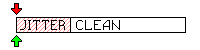

Sets joystick deadzones per axis.
cock.setJoystickDeadzone ( self, joystick, axis, threshold )
table selfnumber joystickstring joysticknumber axisstring axisboolean axisnumber thresholdAxis value "true" will set given threshold to all axis. Threshold value must be less than 1.
Setting a threshold results in axis readings range being "shrinked" towards the end. E.g., setting a threshold to 0.2 will only trigger joystick motion if reading surpass the threshold, but at that point it will return 0, gradually catching up with actual readings while going up to 1. This maintains entire axis range while getting rid of jittering, like when thumbstick doesn't goes to the dead center and jitters a little bit. Here's a figure displaying this:
